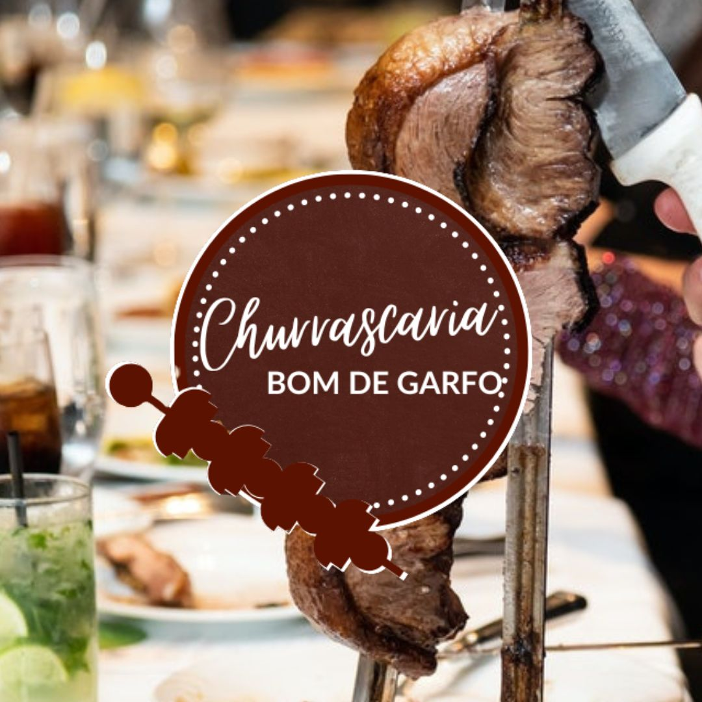

Nossa história
A churrascaria Bom de Garfo foi fundada no dia 20 de julho 2015, com a chegada do chefe James à cidade de Brumado. Inicialmente, junto com a colaboração de mais dois chefes, o chefe Paulo e o chefe Papiro, eram atendidos cerca de dez clientes por dia, número hoje que chega a mais de mil, se tornando referência na região, graças a excelência de seu serviço.